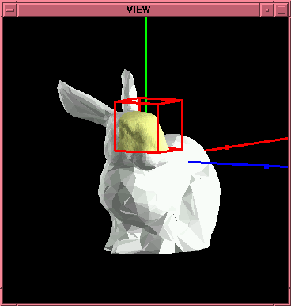
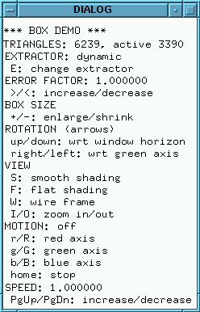

Box demo
This demo uses a magic lens on a 3D object.
How to run the demo
The demo is available in two versions:
-
demo1:
This demo requires a two-dimensional MT embedded in three dimensions,
with approximation errors associated with its tiles and
normal vectors associated with its vertices.
-
demo3:
This demo requires a two-dimensional MT embedded in three dimensions,
it uses the value of triangle areas (rather than approximation errors)
as a measure of accuracy.
Let the MT be contained in a file named xxx.mtf,
tile errors be contained in file xxx.err, and vertex normals
be contained in file xxx.nrm (the last two files are needed
only by demo1).
To run the demo, type:
For instance, try demo1 ../data/bunny.
To exit the demo, strike key "Q" or "q" when the focus is in one
of the demo windows.
Inside the demo
The program extracts a triangle mesh that has a given approximation errror
inside a cubic box (the "magic lens"), and is arbitrarily coarse outside it.
The extraction parameters are:
- a focus condition s.t. active triangles are the ones intersecting a
cubic box;
- a resolution filter condition s.t. a triangle is feasible if its
approximation error is below a given threshold.
The user can move the box interactively, and can change the extraction
parameters.
One windows is used for visualization:
-
the whole surface is shown at the center of the window in an orthogonal
projection from one of the six cardinal direction
(x, y, or z; positive or negative).
-
the box is shown in red, the active triangles of the object are
drawn in jellow, the other triangles in white
-
the three axes of the reference system are shown (the x,y,z axis are
drawn in red, green, blue respectively)
The viewed scene can be rotated and zoomed as explained next.
Another window shows the available commmands for interacting with the
program.


User interaction
User interaction is done by pressing the following keys when the
mouse focus is in one of the three windows of the program.
Box movement
-
r/R: start moving the box in the negative and in the positive direction
of the x axis (the red axis)
-
g/G: start moving the box in the negative and in the positive direction
of the y axis (the green axis)
-
b/B: start moving the box in the negative and in the positive direction
of the z axis (the blue axis)
-
end: stop moving the box
-
home: bring the box to its initial position and size
-
pageup / pagedown: increase/decrease the speed of the box
Triangle mesh extraction
- e / E: switch extractor type (dynamic / local)
- > / <: increase / decrease error threshold used inside the box
- + / -: enlarge / shrink the box
Drawing
- w / W: switch to wireframe style (hidden line)
- f / F: switch to solid style, flat shading
- s / S: switch to solid style, smooth shading (using vertex normals
provided in the MT - only for demo1)
- i / o: zoom in / out
Rotations and translations
- F1: switch between rotation and translation mode
- left arrow / right arrow:
if rotation mode, rotate around the z axis of the scene
(the green axis);
if translation mode, move the scene horizontally
- up arrow / down arrow:
if rotation mode, rotate around an axis parallel to the
horizontal edge of the window;
if translation mode, move the scene vertically
Termination
Remarks
Visualization in hidden wireframe may sometimes produce artifacts
(dashed and dotted lines, or portions of lines not properly hidden).